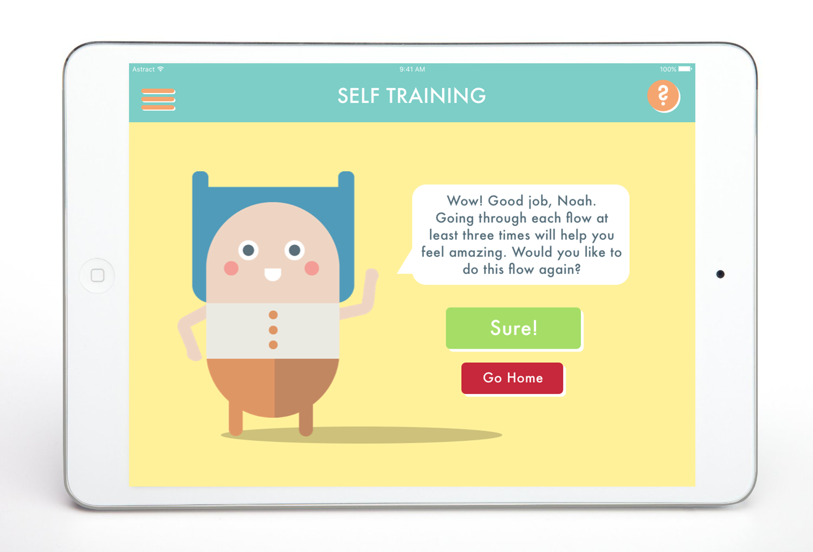
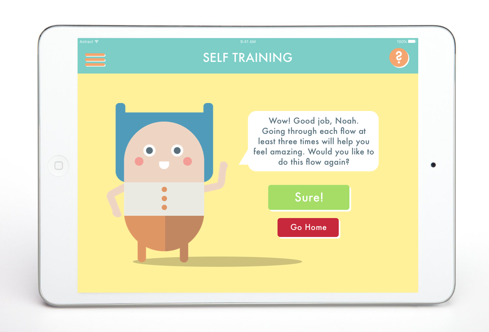

My second project at the DALI Lab at Dartmouth College, Self-Training for ASD is a platform on which children and teens with ASD can learn the art of qigong, a self-administered massage-flow that helps users gain a sense of self and security. These flows help alleviate difficulty with social interactions and hypersensitivity to stimuli in surrounding environments. Currently, instructional videos and text exist on the internet and in books, though these tutorials are both scattered and outdated -- our team has worked to create a single platform that provides instructions for self-massage clearly and effectively. The iOS iPad app along with its administrator views are fully ready to be tested in the hands of users in teaching themselves qigong.
Tutorial
Drawing from apps like Headspace, I designed a playful tutorial for the user that appears upon the first launch of the app, or whenever the "?" button is tapped.


Final Prototype


 

Style Guide

Next Steps
We didn't have a chance to user-test the hi-fi app before the end of the term, however our clients are in the process of user-testing. Once that is complete, we hope to perfect the designs, producing a more logical flow.
View Other Projects